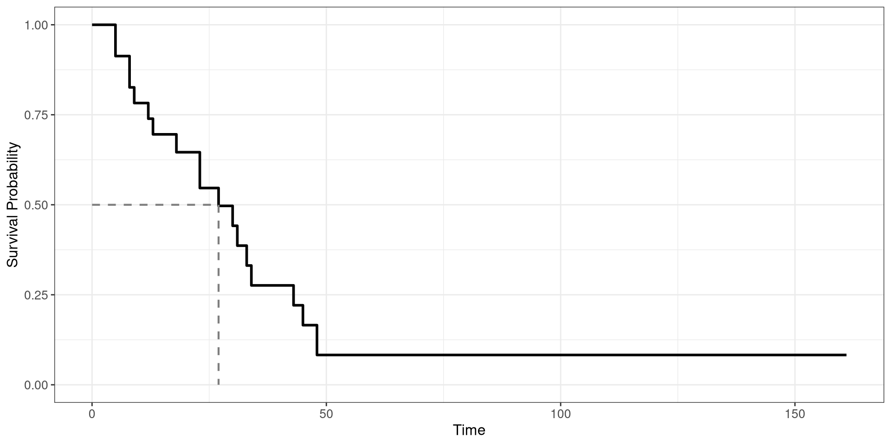

library(ggplot2)
dat <- data.frame(ID = 1:10,
t1 = c(7, 9, 10, 5, 5, 10, 5, 6, 6, 7) ,
censored = c(1, 1, 1, 0, 0, 1, 0, 1, 1, 1))
ggplot(dat, aes(x = ID, y = t1, shape = ifelse(censored, "Death", "Censored"))) + geom_point(size = 4) +
geom_linerange(aes(ymin = 0, ymax = t1)) +
geom_hline(yintercept = 5, lty = 2) +
coord_flip() +
scale_shape_manual(name = "Event", values = c(19, 15)) +
ggtitle("Left Censoring") +
xlab("Patient ID") + ylab("Days") +
theme_bw()Survival Analysis:
The Life and Death of Statistics
Isaac Quintanilla Salinas
Background Information
Background Information
Censoring
Survival Analysis Functions
Survival Rate
Cox Proportional Hazard Model
Example
R Code
Study Example
Acute Myelogenous Leukemia (AML) is a blood and bone marrow cancer that makes abnormal blood cells. This is the most common Leukemia found in adults.
There are several factors that affect the prognosis (survival rate) of those with AML.
How do we determine the survival rate of AML patients?
How do determine the survival rate?
Measure from diagnosis to event of interest
Construct a probability of surviving up to a certain time point
Data Type
Data is typically recorded as time-to-event data.
For biomedical studies, researchers are interested in time from diagnosis to death, known as time-to-death.
Censoring
Background Information
Censoring
Survival Analysis Functions
Survival Rate
Cox Proportional Hazard Model
Example
R Code
Censoring
Censoring is a mechanism in biomedical studies where we do not observe the true time-to-death.
Not all the time is observed.
Three common types of censoring mechanisms: Right, Left, and Interval.
Left Censoring
Interval Censoring
library(ggplot2)
dat <- structure(list(ID = 1:5, eventA = c(0L, 1L, 1L, 0L, 1L),
eventB = c(1L, 0L, 0L, 1L, 0L), t1 = c(7, 5, 10, 4.5, 2), t2 = c(7, 5, 10, 4.5,
8), censored = c(0, 0, 0, 0, 1)), .Names = c("ID", "eventA",
"eventB", "t1", "t2", "censored"), class = "data.frame", row.names = c(NA, -5L))
dat$event <- with(dat, ifelse(eventA, "Censored", "Death"))
dat$id.ordered <- factor(x = dat$ID, levels = order(dat$t2, decreasing = T))
ggplot(dat, aes(x = id.ordered)) +
geom_linerange(aes(ymin = 0, ymax = t1)) +
geom_linerange(aes(ymin = t1, ymax = t2,
linetype = as.factor(censored))) +
geom_point(aes(y = ifelse(censored,
t1 + (t2 - t1) / 2, t2),
shape = event), size = 4) +
coord_flip() +
scale_linetype_manual(name = "Censoring", values = c(1, 2),
labels = c("Not censored", "Interval censored")) +
scale_shape_manual(name = "Event", values = c(19, 15)) +
ggtitle("Interval Censoring") +
xlab("Patient ID") + ylab("Days") +
theme_bw()Right Censoring
library(ggplot2)
dat <- data.frame(ID = 1:10,
t1 = c(7, 9, 10, 4, 2, 10, 8, 5, 6, 7) ,
censored = c(0, 1, 0, 0, 1, 0, 0, 1, 0, 1))
ggplot(dat, aes(x = ID, y = t1,
shape = ifelse(censored, "Death", "Censored"))) +
geom_point(size = 4) +
geom_linerange(aes(ymin = 0, ymax = t1)) +
geom_hline(yintercept = 10, lty = 2) +
coord_flip() +
scale_shape_manual(name = "Event", values = c(19, 15)) +
ggtitle("Right Censoring") +
xlab("Patient ID") + ylab("Days") +
theme_bw()
Censoring
Censoring affects the time-to-death information
However, we obtain some information when data is censored
Incorporate methods to utilize partial information
Censoring is independent of time-to-death generation
Right Censoring
Data Construction
\(T_i^*\): True time-to-event
\(C_i\): Censoring Time
\(T_i=\min(T_i^*,C_i)\): Observed time-to-event
\(\delta_i = I(T_i^*<C_i)\): Event indicator
Survival Analysis Functions
Background Information
Censoring
Survival Analysis Functions
Survival Rate
Cox Proportional Hazard Model
Example
R Code
Survivial Analysis Functions
Describe the Probability Model
- Hazard Function
- Survival Function
- Cumulative Hazard Function
Hazard Function
\[ h(t) = \lim_{\Delta t \rightarrow 0} \frac{P(t \le T^* < t + \Delta t \mid T^* \ge t)}{\Delta t} \]
Survival Function
\[ S(t) = P(T^* > t) \]
Cumulative Hazard Function
\[ H(t) = \int_0^t h(u) du \]
Survival and Hazard Function Relationship
\[ S(t) = e^{-H(t)} \]
Probability Density Function
\[ f(t) = h(t)S(t) \]
Survival Rate
Background Information
Censoring
Survival Analysis Functions
Survival Rate
Cox Proportional Hazard Model
Example
R Code
Survival Curve
The survival curve will determine what is the probability of suriving up to a certain time.
A survival curve uses both censored and uncensored data
A survival curve can be used to determine the median survival time of a disease
Data
Let \(\{t_j,d_j,R_j\}^D_{j=1}\) denote the survival data, where \(t_1<t_2<\cdots<t_D\) are the ordered distinct observed event times, \(d_j\) represents the number of events at time point \(t_j\), and \(R_j\) denotes the number of subjects still at risk of experiencing the event at \(t_j\).
Kaplan-Meier Estimator
\[ \hat{S}(t) =\left\{\begin{array}{cc} 1 & t=0 \\ \prod_{i:t_j \le t} \left( 1 - \frac{d_j}{R_j} \right) & t_j < t \end{array}\right. \]
Standard Error
\[ \widehat{SE}\{\hat S(t)\}=\sqrt{\hat S^2(t)\sum_{t_j\leq t}\frac{d_j}{R_j(R_j-d_j)}}. \]
Survival Curve
Cox Proportional Hazard Model
Background Information
Censoring
Survival Analysis Functions
Survival Rate
Cox Proportional Hazard Model
Example
R Code
Data
Let \(\{T_i,\delta_i,\boldsymbol X_i\}^n_{i=1}\) denote the survival data, where \(T_i\) is observed event times, \(\delta_i\) is the survival indicator, and \(\boldsymbol X_i\) denotes the a vector of predictor variables.
Proportional Hazard Model
\[ h(t \mid \boldsymbol X) = h_0(t) \exp(\boldsymbol\beta^\mathrm T\boldsymbol X) \]
\(h_0(t)\): baseline hazard function
\(\boldsymbol\beta\): regression coefficients
\(\boldsymbol X\): predictor variables
How do we estimate parameters \(\boldsymbol \beta\)
We use a maximum likelihood approach where we search for the values of \(\boldsymbol \beta\) the maximizes the likelihood function.
The Likelihood function measures the probability of observing the data given the parameters \(\boldsymbol \beta\).
Construction of the Likelihood Function
Due to right censoring, likelihood needs careful construction
Death is observed
\[ f(t|\boldsymbol X,\boldsymbol \beta) = h(t)S(t) \]
Censored
\[ S(t) \]
Likelihood Function
\[ L(\boldsymbol \beta) = \prod_{i=1}^n [h(T_i \mid \boldsymbol X_i, \boldsymbol\beta)]^{\delta_i} [S(T_i \mid \boldsymbol X_i, \boldsymbol \beta)] \]
Likelihood Function
\[ L(\boldsymbol \beta) = \prod_{i=1}^n \{h_0(t) \exp(\boldsymbol\beta^\mathrm T\boldsymbol x_i)\}^{\delta_i} \exp\left\{-\int^{T_i}_0 h_0(s) \exp(\boldsymbol\beta^\mathrm T\boldsymbol x_i)ds\right\} \]
Estimating the Baseline Hazard Function
\[ h_0(t) \]
Parameterically
Weibull
log-Normal
Gompetz
Nonparametrically
Profile MLE
Spline Models
Partial Likelihood
\[ L_P(\boldsymbol\beta) = \prod_{i=1}^D \frac{\exp(\boldsymbol\beta^T \boldsymbol X_i)}{\sum_{j \in R(t_i)} \exp(\boldsymbol\beta^T \boldsymbol X_j)} \]
- \(R(t_i)\): the patients at risk prior to time \(t_i\)
- \(D\): Number of individuals experiencing the event
Estimation
The estimates of \(\boldsymbol \beta\) can be obtained finding the Maximum Partial Likelihood Estimate (MPLE)
Sampling Distribution
\[ \hat{\boldsymbol \beta} \overset{\circ}{\sim} N\left\{\boldsymbol \beta, - I^{-1}(\boldsymbol \beta)\right\} \]
Example
Background Information
Censoring
Survival Analysis Functions
Survival Rate
Cox Proportional Hazard Model
Example
R Code
Colon Example
- Colon cancer is a type of cancer found in the large intestine
- We will be looking whether different treatment types will have an affect on the survival rate
Colon Survival Curve
Colon Survival Curve
Colon Survival Curve
Cox PH Model
R Code
Background Information
Censoring
Survival Analysis Functions
Survival Rate
Cox Proportional Hazard Model
Example
R Code
Fitting a Survival Curve
1library(magrittr)
2library(survival)
3library(ggsurvfit)
4df_colon %$% survfit(Surv(time, status) ~ surg) %>%
5 ggsurvfit(linewidth = 1) +
6 add_confidence_interval() +
7 add_quantile(y_value = 0.5, color = "gray50", linewidth = 0.75)- 1
- Pipe package
- 2
- Survival functions package
- 3
- Plots survival curves package
- 4
- Applies the Kaplan-Meier Function
- 5
- Plots Survival Curve
- 6
- Adds Confidence Intervals
- 7
- Determines Median Survival Time
Fitting Cox PH Model
#> Call:
#> coxph(formula = Surv(time, status) ~ surg)
#>
#> n= 929, number of events= 468
#>
#> coef exp(coef) se(coef) z Pr(>|z|)
#> surgExtended Time Since Surgery 0.2549 1.2903 0.1008 2.529 0.0114 *
#> ---
#> Signif. codes: 0 '***' 0.001 '**' 0.01 '*' 0.05 '.' 0.1 ' ' 1
#>
#> exp(coef) exp(-coef) lower .95 upper .95
#> surgExtended Time Since Surgery 1.29 0.775 1.059 1.572
#>
#> Concordance= 0.523 (se = 0.01 )
#> Likelihood ratio test= 6.17 on 1 df, p=0.01
#> Wald test = 6.39 on 1 df, p=0.01
#> Score (logrank) test = 6.43 on 1 df, p=0.01